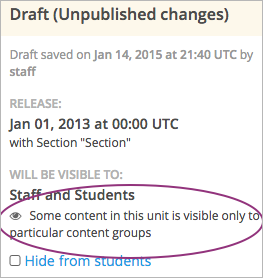

如果您在课程中已经 cohorts enabled ， 您可以为不同队列的学生提供不同的课程体验。
您可以使一些学生得到的内容与其他学生不同。 您可以在Studio中建立 content groups ， 将特定组件设定为仅对一个或多个内容小组可见。 如果您将一个或多个队列结合到同一个内容小组中， 只有这些队列中的成员能够看到您设定的内容。
更多关于内容小组的内容请参考 内容小组 。 关于特定内容队列的示例请参考 示例：特定队列课件.
完成以下步骤创建特定队列内容：
在Studio中：
在学习管理系统中：
假设您在课程中建立了两个 cohorts ， 大学校友和大学在校生。当学生进入课件页面或论坛中时， 不在这两个队列中的学生被自动分配到第三个队列中，即默认队列。 更多关于在课程中启动队列和分派队列的信息请参考 启用、配置分队模式 。
除了两个学校相关的队列的学生将得到他们感兴趣的特殊内容以外，您希望其他所有的学生将到相同的课程体验。
在每个章节最后，您希望包含一个来自学校官方，包括校长和学院院长的视频信息。 这些视频仅向您学校的学生和校友展示。在每章节的最后，您想测验一下本章节的知识。 这些测验题仅对所有参加本课程的学生可见。
要达到这些要求，在Studio的 小组设置 页面中建立名为“学校特别内容”内容小组。 在导师界面的 队列 栏中，将“校友”和“在校学生”队列合并到“学校特别内容”小组中。
在您的课程大纲页面，更改视频组件的可见性设置， 使各章节末尾的视频仅对“学校特别内容”内容小组可见。 您不需要改变小测试题的可见性，因为如果没有在组件可见性设置中特定内容小组， 组件将对所有学生可见。
最后一步，您在学习管理系统中预览课程，确保学生将看到您为他们设定的内容。 您使用学生角色（此角色不属于任何内容组）确认在每章最后看到小测验，且看不到学校相关视频。 当您使用“学校指定内容”小组中学生的角色时，您可以看到学校相关视频和课后小测验。
内容小组将学生分成可以看到特定内容的虚拟小组。 您可以使用内容小组指定特别内容仅对特定 cohorts 中的学生可见。
您将在Studio中建立内容小组，在课程大纲里使用 可见性设置 指定组件是否对一个或多个内容小组可见。 任何没有设置可见性的课程组件将保持对所有学生可见。
如果您没有将内容小组与队列相结合，内容小组并不影响课程组件的可见性。 如果您指定确切的课程内容对一个内容小组可见，且已经将此小组与队列相结合， 那么这些队列将看到指定内容。
关于使用内容小组创建特殊队列可见的示例请参考 示例：特定队列课件.
遵循以下步骤创建内容小组。
创建内容小组以后，您可以在课程大纲中将特定内容设置为对特定内容小组可见。 更多细节请参考 将指定组件设置为仅对特定内容小组可见.
在导师面板中，您可以将内容小组和队列结合起来。 更多细节请参考 结合队列和内容小组.
遵循以下步骤查看使用内容小组的单元。
在Studio中选择 设置 ，然后选择 小组配置 。
在 小组配置 页面找到您想查看的内容小组。
内容小组框中显示小组是否正在使用。 如果正在使用，您将看到使用小组的单元编号以及单元链接。
点击链接进入单元在课程大纲中的页面，您可以 specify whether that unit is visible to the content group.
更多关于预览课程以确保队列中的学生能看到特定内容的细节请参阅 预览指定队列课件. 更多关于删除内容小组的细节请参阅 删除内容小组.
Note
您只能删除未被任何课程单元使用的内容小组。 如果需要删除正在使用的内容小组，您必须先将该小组从课程单元可见性设置中删除。 关于查看哪些单元正在使用内容小组想信息请参考 查看内容小组使用情况 。
创建了内容小组之后，您可以在Studio中编辑课程并修改组件的可见性设置。
Note
您不需要修改您希望对所有学生可见的组件设置。 如果您没有指定对内容小组可见，组件将对所有参与课程的学生开放， 无论这些学生是否在队列中。
您只能在单元级别的组件中指定其内容对内容小组可见。您不能指定整个单元、 子章节或章节对内容小组的可见性。
在个别任务中，您创建队列并将其与内容小组结合起来。 只有您在组件可见性设置中选择的内容小组成员能查看该组件。 关于结合队列和内容小组的细节请参考 结合队列和内容小组 。
遵循以下步骤指定组件对特定内容小组可见。
#.在Studio中选择 内容 然后选择 大纲 。
组件 可见性设置 的图标变成黑色， 侧栏中的课程章节细节说明有些内容已经设置为仅对特定小组可见。
关于预览课程以确保队列中的学生能看到特定内容的细节，请参考 预览指定队列课件.
Note
除了对内容小组的可见性设置之外，学生能不能看到课程组件还取决于组件是否对学生隐藏、 单元是否已经发布以及课程发布日期。关于预览课件的细节请参考 预览课程内容.
创建了内容小组之后，您可以将其与您希望看到相同课程内容的队列相结合。
Note
一个内容小组可以和一个或多个队列相结合；一个队列只能和一个内容小组相结合。
步骤如下：
点击 保存 。
现在内容小组已经和队列结合了，任何您 designate as visible to that content group 的课程内容已经对已结合的队列可见。
您可以重复步骤3到7将更多的队列结合到内容小组中。Y
关于使用内容小组创建指定队列课件的示例请参考 示例：特定队列课件.
在您指定组件可见性之后，您可以预览课件以确保每个小组能看到您指定的内容。
Note
除了对内容小组的可见性设置之外，学生能不能看到课程组件还取决于组件是否对学生隐藏、 单元是否已经发布以及课程发布日期。关于预览课件的细节请参考 预览课程内容.
您可以以小组成员的角色查看课程：
| 角色 | 当您使用此角色预览时 |
|---|---|
| 教员 | 您将看到所有课程内容，包括对学生隐藏的内容。 |
| 学生 | 您将看到对所有学生可见的内容。 |
| <内容小组名> 中的学生 | 您将看到对所有学生可见的内容，以及指定对此内容小组可见的内容。 |
此课程将以所选内容小组成员的视角呈现。
课程上线之后，您也可以以学生视角查看在线版本。 在Studio中点击 在线查看 。更多信息请参阅 查看在线课程.
{kind=link}
{kind=link}